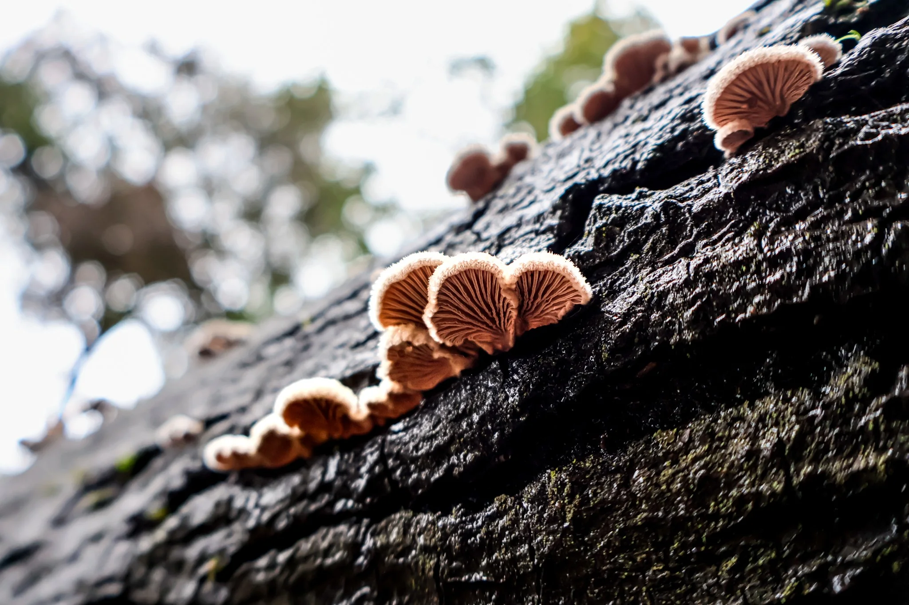
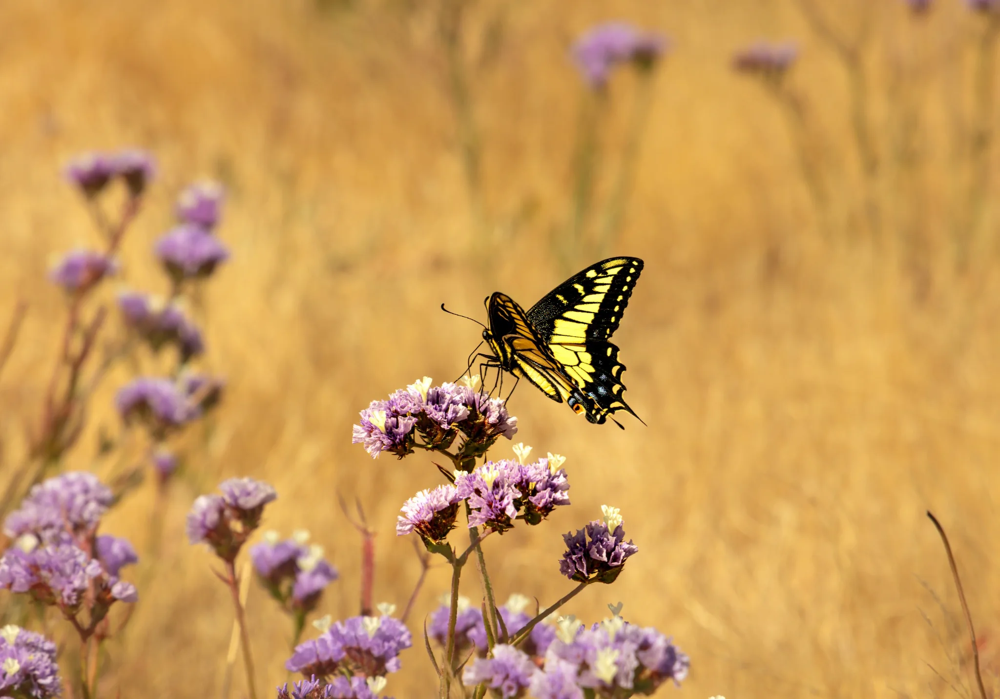

The Bridge at Blue Hour
Location, atmosphere, and interpretation.
Stories
The places, discoveries, editing choices, and conversations behind the photographs.
“Where was this taken?” “What kind of flower is that?” “When was this photograph made?”
Stories preserves the same curiosity that begins when someone picks up a print and wants to know more.
Location, atmosphere, and interpretation.

What appears when we lower our perspective.

The photograph that opens this site.
Photography as interpretation.